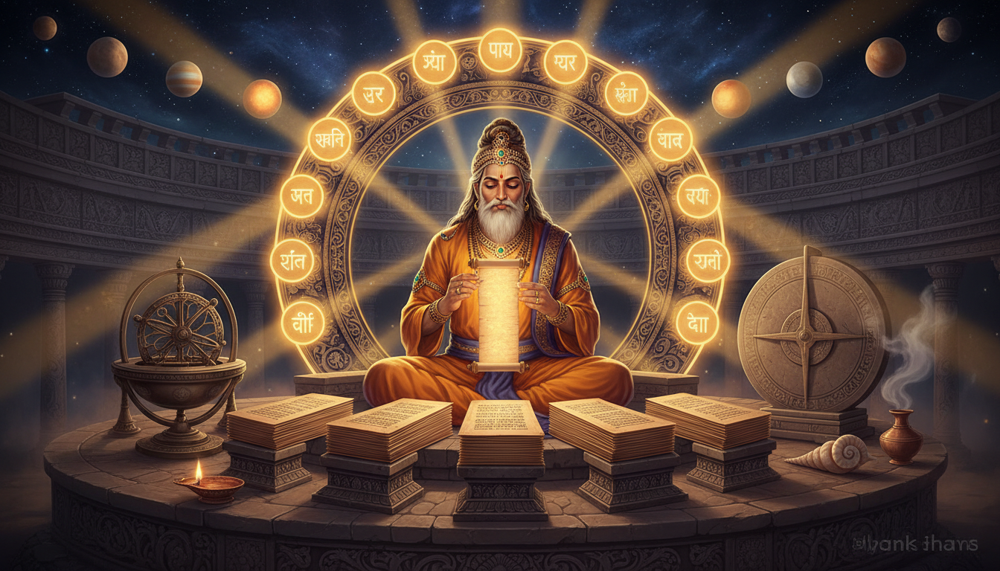

1. उसका नाम कोई पद नहीं था। वह एक काम का विवरण था।
शुरू उस शब्द से करिए, क्योंकि इस परंपरा में नाम शायद ही सजावट होते हैं।

व्यास (व्यास) का अर्थ है संकलक, व्यवस्था करने वाला — और साथ ही "विभाजन" या "पृथक्करण", अर्थात "फाँटना", "भेद लगाना", अथवा "वर्णन करना"। व्यास लेख में यह भी दर्ज है कि यह "एक पवित्र ऋषि अथवा साधु-विद्वान का भी उपाधि है, और उन व्यक्तियों को दिया जाता है जो अपनी लिखतियों से विख्यात हों"।
इसे दोबारा पढ़िए। जिसे व्यास कहा जाता है, वह विभाजक है। न वह प्रकट करने वाला, न वह विनाश करने वाला। वह एक अखंड, अविभाजित ज्ञान-समूह को लेकर उसे नामित, उपयोग्य अंशों में छाँटता है। शब्द और कार्य एक ही शब्द हैं। यह अभिलेख में संयोग नहीं है — यह अभिलेख ही है।
और यह नाम क्यों टिका, इस पर एक अनुच्छेद विचार करने योग्य है। व्यास लेख बताता है कि जन्म-नाम थे कृष्ण द्वैपायन — कृष्ण उनके गहरे वर्ण के लिए, और द्वैपायन क्योंकि वे एक द्वीप पर पैदा हुए — और कि "महाभारत की रचना और वेदों के संकलन के पश्चात ही व्यास को यह नाम मिला, जिसने उनके जन्म-नामों का स्थान ले लिया"।
यह नाम पूर्व-होने वाली पहचान है। उन्होंने विभाजन करने के बाद ही "विभाजक" कहलाए। अभिलेख में शीर्षकों का सामान्यतः यही तरीका है — नियुक्ति नहीं, बल्कि दिखाए गए कार्य से अर्जित।
व्यावहारिक रूप: आपकी पहचान आपके पद का नहीं, आपके कार्य का विवरण है। उपाय-चिकित्सा के क्षेत्र में आप ऐसे लोगों से मिलेंगे जो खुद को जिस कार्य के नाम से बुलाते हैं, उसके अनुसार — "शनि का रोगी", "राहु-पीड़ित", "दशम भाव का नष्ट" — और ऐसे लोगों से भी जो खुद को जो हैं उसके नाम से बुलाते हैं। पहला प्रकार एक कार्य का विवरण है, और कार्य वास्तविक होते हैं, क्योंकि कार्य को किया जा सकता है। दूसरा प्रकार एक पद है, और पदों को किया नहीं जा सकता, केवल दिखाया जा सकता है। जब अपना उपाय-कर्म अपना नाम रखें, तो कार्य रखें। "जो हर मंगलवार आठवें भाव के लिए शनि-प्रोटोकॉल करता है और रुकता नहीं" — यह कार्य है। "जिसने सबसे अधिक शनि-कर्म किया" — यह पद है।
2. कोहरे के भीतर द्वीप पर जन्म: वह जन्म जिसने एक संकलक बनाया
इसकी उत्पत्ति-कथा उसकी उपलब्धि से भी अधिक विचित्र है, और यहीं पर गूढ़ सामग्री बसती है।
व्यास की माता सत्यवती "मछुआरों की संतान के रूप में पाली गई, जो यमुना नदी के पार लोगों को ले जाते थे। वह अपने पिता की इस काम में सहायता करती थी।" ऐसी ही एक नौका-यात्रा में उनका सामना ऋषि पराशर से हुआ। और यहाँ अभिलेख असामान्य हो जाता है:
उन्होंने अपनी इच्छा से आगे बढ़कर उसके पास जाना चाहा, पर उसने अपनी कौम का रक्षा करने की विनती की। तथापि पराशर ने अपनी दैवीय शक्तियों से नौका के चारों ओर कोहरा छा दिया और उसके स्वाभाविक सुगंध को मश्क की सुगंध में बदल दिया। उन्होंने नदी के बीच में एक द्वीप भी उत्पन्न किया, जहाँ उसने संयोग पूर्ण किया।
कोहरा छाया गया। एक सुगंध बदली गई। एक बहती नदी के बीच में ऐसा स्थान बनाया गया जो पहले कभी था ही नहीं — ताकि बच्चे के जन्म की जगह कोई पहले से मौजूद जगह न हो। और फिर:
इसके बाद उसने उसे आश्वासन दिया कि संतान होने के बावजूद वह कुमारी रहेगी। उसने भविष्यवाणी की कि इस पुत्र के विषय में अद्भुत होगा — विष्णु का अंशावतार, अत्यंत बुद्धिमान पुरुष, और एक पूज्य गुरु जो वेदों का विभाजन करेगा और तीनों लोकों में पूजा जाएगा।
उस भविष्यवाणी की संरचना पर ध्यान दीजिए। वह महिमामयी होने का सामान्य भविष्यवाणी नहीं करता। वह एक विशिष्ट कार्य की भविष्यवाणी करता है: वह वेदों का विभाजन करेगा। दैवीयता यहाँ विभाजन से जुड़ी है। जन्म के संकेत भी कार्य के लिए बहीखाते हैं।
और शिशु जन्म के साथ पूर्ण बना हुआ निकला:
जन्म के तुरन्त बाद ही शिशु तपोरूप में परिपक्व हो गया, आध्यात्मिक प्रभाव से संपन्न। उसने अपनी माता को आश्वस्त किया कि उसे उसकी चिंता नहीं करनी चाहिए और वह तपस्या में जाने वाला है। उसने यह भी वचन दिया कि जब भी वह कठिनाई में पड़ेगी, वह उसका स्मरण कर सकेगी और वह उसके पास प्रकट हो जाएगा।
व्यावहारिक रूप: कोहरा ही कार्य की परिस्थिति है, और आपको उसके भीतर काम करने की अनुमति है। उस नौका के चारों ओर का कोहरा कोई अभिशाप नहीं है; वह द्वीप की पूर्व-अवस्था है। बिना दृश्यता की कुछ हानि के आप ऐसी वस्तु नहीं पा सकते जो पहले कभी अस्तित्व में न रही हो। देखिए कि उपाय-साधना में, जब वह चल रही होती है, उसका कर्ता एक मौसम के लिए अपने आसपास के लोगों के लिए कम पढ़ने योग्य हो जाता है — सामाजिक प्रदर्शन के लिए कम उपलब्ध, साधारण शोर के लिए कम उत्तरदायी। वह कोहरा कोई दुष्प्रभाव नहीं है जिसके लिए क्षमा माँगनी हो। वह द्वीप की पूर्व-अवस्था है। और उसी अनुच्छेद का वचन हर उस परम्परा का कार्य-समझौता है जो कभी काम कर पाई: जब भी वह कठिनाई में पड़ेगी, वह उसका स्मरण कर सकेगी और वह उसके पास प्रकट हो जाएगा। जो उपाय-परम्परा कठिनाई के समय बुलाई नहीं जा सकती, वह परम्परा नहीं है — वह विज्ञापन-पुस्तिका है।
3. एक वेद, चार ग्रंथ: विभाजन नीचे की ओर डिज़ाइन था
अब वह केंद्रीय कृत्य, और वह वाक्य जो इस लेख की शेष शैली तय करता है।
विष्णु पुराण (पुस्तक 3, अध्याय 3) का उद्धरण व्यास लेख में सीधे दिया गया है:
प्रत्येक तृतीय विश्व-युग (द्वापर) में, विष्णु, व्यास के रूप में, मानव-कल्याण के लिए, वेद को — जो ठीक-ठाकर एक है — बहुत अंशों में विभाजित करता है। मर्त्यों की सीमित धैर्य, शक्ति और लाग देखकर, वह वेद को चौथक करता है, ताकि वह उनकी क्षमताओं के अनुरूप हो।
वाक्य का मुख्य अंश दोबारा पढ़िए: "मर्त्यों की सीमित धैर्य, शक्ति और लाग देखकर"। यह मर्त्यों की प्रशंसा नहीं है। यह एक निदान है। वेद एक है और पूर्ण है; मानव-क्षमता सीमित है; इसलिए विभाजन इसलिए है कि वह एक व्यक्तिगत अभ्यासकर्ता की कमी को भर सके, न कि इसलिए कि पाठ में सुधार हो। चार-विभाजन एक नीचे-की-ओर डिज़ाइन है — पूर्ण वस्तु को इस प्रकार पुनः काटा गया कि एक सीमित मानव उसे वास्तव में धारण कर सके।
वेद लेख प्राचीन अवस्था दर्ज करता है: "प्राचीन भारतीय परंपरा ने आरंभ में केवल तीन वेद माने।" ऋग्वेद, तैत्तिरीय ब्राह्मण 3.12.9.1 तथा ऐतरेय ब्राह्मण 5.32-33 "केवल तीन वेदों का उल्लेख करते हैं।" चौथा एक जोड़ा गया और जिसे सिद्ध करना पड़ा।
और विभाजन एक बार का नहीं है। वही अनुच्छेद आगे कहता है:
वैवस्वत मन्वन्तर में महर्षियों द्वारा वेदों की अट्ठाईस बार व्यवस्था की गई [...] और तदुपरांत अट्ठाईस व्यास व्यतीत हो चुके हैं; जिन्होंने अपने-अपने काल में वेद को चार भागों में विभाजित किया। प्रथम... वितरण स्वयं स्वयम्भू (ब्रह्मा) ने किया; दूसरे में वेद-व्यवस्था करने वाला (व्यास) प्रजापति था [...] (इसी प्रकार अट्ठाईस तक)।
अट्ठाईस व्यवस्थाएँ, अट्ठाईस व्यास, प्रत्येक फिर से वही विभाजन करता हुआ। और चक्र अभी भी चल रहा है:
विष्णु पुराण के अनुसार, द्रोण के पुत्र अश्वत्थामा अगले व्यास होंगे और सप्तम मन्वन्तर के 29वें महा युग में वेद का विभाजन करेंगे।
व्यावहारिक रूप: संकलन को सिद्धान्त के अनुसार नहीं, अभ्यासकर्ता के अनुसार विभाजित कीजिए। यह इस पूरे लेख का सबसे व्यावहारिक नियम है, और लगभग कोई इसे लागू नहीं करता। जब आप कोई उपाय-साधना अपनाते हैं, तो आपकी प्रवृत्ति उसका सबसे पूर्ण रूप लेने की होगी — पूर्ण 108-मणि की गिनती, 40-दिन का पूरा प्रोटोकॉल, 21-दिन की पूरी मंत्र-शृंखला, वह रूप जिसमें चारों अंग हों। व्यास का अपना तर्क कहता है कि यह गलत कदम है। परम्परा इसलिए चार भागों में काटी गई क्योंकि सम्पूर्ण मर्त्य-क्षमता से परे था। तो नियम उल्टा है अपनी सहज वृत्ति के: उस छोटे रूप को लीजिए जिसे आप थके होने पर, बीमार होने पर, या अशुभ होने पर भी करते रहेंगे — और फिर उसी छोटे रूप को संरचनात्मक रूप से पूर्ण बनाइए। चार-भागीय वेद जो व्यक्ति वास्तव में उठा सके, उस एक पूर्ण वेद से बेहतर है जिसे वह पंद्रह दिन में छोड़ देता है। जब आप कोई भारी उपाय खंडों में बाँटें, तो जिसे अभ्यासकर्ता उठा सके उस आधार पर बाँटिए, न कि सिद्धान्त की साफ़-सुथरी वर्तनी के आधार पर।
और वाक्य का दूसरा भाग भी ध्यान दीजिए: विभाजन हर युग में एक उत्तराधिकारी द्वारा दोहराया जाता है। अश्वत्थामा अगली कुर्सी पर बैठेंगे। कार्य स्थायी है; वह जो उसे सँभालता है, अस्थायी है। यही इसे परम्परा बनाता है, व्यक्ति-पूजा नहीं।
4. सत्ताईस, और वह तारा जो हटा दिया गया
यहाँ वह विवरण है जो विभाजक को ज्योतिषी से जोड़ता है, और वह गणित है, प्रतीक नहीं।
नक्षत्र लेख संख्या की कहानी बताता है:
बाद के ज्योतिष में, इस शब्द ने भुवज के 27 समान भागों को भी दर्शाना शुरू किया। इस समान-विभाजन पद्धति में प्रत्येक नक्षत्र 13° 20' का फैलता है।
और संख्या का इतिहास एक शुद्धि का दस्तावेज़ है:
कांस्य युग (लगभग 2000 ईसा पूर्व) के दौरान खगोलविदों ने 360 दिन का कैलेंडर प्रयोग किया, जिसमें सूर्य एक अंश प्रतिदिन चलता था और चंद्र औसतन 13 अंश प्रतिदिन। आकाश के 360 अंशों को चंद्र के 13 अंश वाले दैनिक पथ से भाग देने पर कक्षीय आवर्तकाल 27.69 दिन आता है। खगोलविदों ने इसे 28 नक्षत्रों तक पूर्णांकित किया। बाद में, जब 365 दिन का सौर कैलेंडर अपनाया गया, तो चंद्र की अद्यतन दैनिक गति 13.2 अंश हो गई और कक्षा 27.27 दिन की हो गई। खगोलविदों ने इसे नीचे की ओर 27 नक्षत्रों तक पूर्णांकित किया और अभिजित तारे को छोड़ दिया।
और प्राचीन स्रोत एक-दूसरे से असहमत हैं, जैसा अपेक्षित है: "अथर्ववेद में 28 नक्षत्रों की सूची है। अन्य प्राचीन भारतीय धर्मग्रंथ जैसे तैत्तिरीय संहिता (4.4.10.1-3) और शतपथ ब्राह्मण (10.5.4.5) 27 नक्षत्रों का उल्लेख करते हैं।" ऋग्वेद का सूक्त 19.7 "27 नक्षत्रों अथवा तारों की सूची देता है"।
अर्थात एक समय था जब अट्ठाईस थे, और फिर कैलेंडर बदला, और शुद्धि घटाव द्वारा हुई।
यह खगोल विज्ञान की एक टिप्पणी से अधिक है: जो तारा हटाया गया, वह अपने अजेय होने के नाम पर था। अभिजित — अजेय, जिसे कोई जीत न सके। वह अट्ठाईस में अंतिम था और सबसे पहले गया।
व्यावहारिक रूप: आपकी कुंडली एक नीचे-पूर्णांकित सत्य है, और जो हटाया गया वही वह भाग है जहाँ सब कुछ ठीक चलता है। अभिजित अजेयता का नक्षत्र है, और जो परम्परा सत्ताईस की गिनती करती है उसने उसे प्रचलित आकाश से ही मिटा दिया है। यह नामकरण का संयोग नहीं है; यह किसी कार्यशील परम्परा का आकार है — चलतू व्यवस्था का यह मानोकरण है कि कोई कुंडली पूर्णतः अभेद्य नहीं, और कोई जीवन अवरोधरहित नहीं। उपाय-प्रोटोकॉल चलाने वाले व्यक्ति के लिए यह एक साँत्वना भी है और चेतावनी भी। साँत्वना: आपसे अपूर्ण होने की अपेक्षा नहीं की जाती, इसलिए कठिन कुंडली व्यक्तिगत असफलता का प्रमाण नहीं है। चेतावनी: जो पूर्णता आप कल्पना में बनाए रखते हैं, वही एकमात्र वस्तु है जिसे प्रचलित परम्परा ने हटा दिया, क्योंकि कार्यशील प्रोटोकॉल उस व्यक्ति के लिए बनाया जाता है जिसमें छेद होते हैं। उपाय सर्वोत्तम-स्थिति की कुंडली के लिए मत बनाइए। अभिजित जिसके अभाव है, उसी के लिए बनाइए।
और उसी लेख में एक दूसरा सुधार भी है जो अधिक उपयोगी है:
नक्षत्रों को दक्ष के पुत्रियों तथा चन्द्र के पत्नियों के रूप में व्यक्त किया गया है। जब चन्द्र ने रोहिणी के पक्ष में अपनी अन्य 26 पत्नियों की उपेक्षा की, तो उसके ससुर ने उसे कुष्ठ से ग्रसित कर दिया।
व्यावहारिक रूप: चन्द्र का पारंपरिक रोग जो उत्पन्न होता है वह आसक्ति से है, और आरोग्य वितरण से। इस कथा में चन्द्र का अपराध कोई ग़लत कार्य नहीं है, बल्कि एक संकुचन है: उसने अपनी इक्कीस पत्नियों में से एक पर ध्यान दिया और बाकी छब्बीस की उपेक्षा की, और दण्ड उसे अंग-ही विकार था। उपाय-साधना में भी यही चन्द्र-पीड़ा का प्रारूप है — कुंडली का भाव-केंद्र एक ही वस्तु पर संकुचित हो जाता है, और वही संकुचन धीरे-धीरे उस अंग को ही खा जाता है। पारंपरिक सुधार इस आसक्ति से लड़ने का नहीं, बल्कि क्षेत्र को चौड़ा करने का है: उपेक्षित कारकों पर ध्यान दीजिए, अपने अर्पण को उन भावों में बाँटिए जिन्हें आप अनदेखा कर रहे हैं, और चन्द्र का ध्यान घुमने दीजिए। ऐसा चन्द्र-प्रोटोकॉल जो केवल चन्द्र को प्रबल करता है, चन्द्र को और बिगाड़ सकता है। कुंडली-स्तर का निर्देश सरल है: दो कारक जिन्हें आप उपेक्षा कर रहे हैं, उन्हें खोजिए और इस सप्ताह उन्हें एक-एक सक्रिय क्रिया दीजिए।
5. ग्रहों को मिला नाम: "ग्रह" महाभारत से प्रवेश करता है
अब इस लेख का मोड़, और यह पूरी तरह स्रोत-आधारित है।
ज्योतिष लेख आदि परतें स्थापित करता है। ज्योतिष ज्योत से है — "प्रकाश, जैसे सूर्य का अथवा चन्द्र का अथवा आकाशीय पिंड का" — और इसमें "खगोल, ज्योतिष, तथा खगोलीय पिंडों की गतियों द्वारा समय-गणना का विज्ञान" सम्मिलित है। यह "वेदाङ्गों में, वैदिक अनुष्ठानों के सहायक छः अनुगत विषयों में से एक है", और "वेदों के भीतर खगोल के प्राचीनतम ग्रंथों में वेदाङ्ग ज्योतिष है।"
फिर यह लेख वह करता है जो अधिकांश पाठक छोड़ देते हैं और जिसे दो बार पढ़ना चाहिए:
आदिकालीन ज्योतिष का सम्बन्ध उस कैलेंडर के निर्माण से है जो यज्ञ-अनुष्ठानों की तिथियाँ निश्चित करने के लिए था, और ग्रहों के बारे में कुछ भी लिखा नहीं गया। अथर्ववेद और चान्दोग्य उपनिषद में ग्रहण करने वाले "दैत्यों" के उल्लेख हैं, जिनमें से चान्दोग्य राहु (छाया-पिंड, जो ग्रहण और उल्कापात के लिए उत्तरदायी माना गया) का उल्लेख करता है। ऋग्वेद भी ग्रहण-कारक दैत्य स्वर्भानु का उल्लेख करता है। परन्तु ग्रह शब्द स्वर्भानु पर बहुत बाद के महाभारत और रामायण तक लागू नहीं किया गया।
यहीं रुकिए और जो कहा गया उसे ध्यान से देखिए। ऋग्वेद में वह वस्तु है। चान्दोग्य में वह वस्तु है। अथर्ववेद में वह वस्तु है। परन्तु शब्द — ग्रह, वही शब्द जिसके नाम पर आपके उपाय बने हैं, वही शब्द जो हर मंत्र, हर दोष-नाम और हर ग्रह-गमन-निर्देश में है — उस तक उस पर लागू नहीं हुआ जब तक महाभारत नहीं आया।
और महाभारत व्यास का ग्रंथ है। वेद-विभाजक वही व्यक्ति है जिसने महाकाव्य से ग्रह-शास्त्र की भाषा को स्थिर किया।
यह रूपक नहीं है। यह दस्तावेज़ी तथ्य है, जिसका यह अर्थ निकलता है: उपाय-ज्योतिष की शब्द-संपत्ति और महाकाव्य की शब्द-संपत्ति एक ही संकलक के हाथ से निकली है। ग्रह-उपाय परम्परा कोई पृथक आयात नहीं था; वह व्यास के व्यवस्थित किए गए ग्रंथ के भीतर पली-बढ़ी और उसी ग्रंथ की विधि विरासत में की — और वह विधि यह है कि एक विद्यमान शक्ति को लेकर उसके कार्य का नाम ठीक-ठाकर रखा जाए।
व्यावहारिक रूप: ज्योतिष में ग्रह कारक है — घटना नहीं। आज की उपाय-साधना में यही सबसे सामान्य भ्रम है, और इसी कारण अधिकांश श्रम व्यर्थ होता है। जब आप शनि-दोष के लिए शनि-मंत्र का पाठ करते हैं, तो आप शनि से नहीं कह रहे कि वह आपके लिए कुछ करे, और आप निश्चित रूप से "सारा शनि" भी नहीं माँग रहे। आप उस कार्य के कारक से पुनःस्थापन माँग रहे हैं ताकि वह आपकी कुंडली में अपने उचित सम्बन्ध में बैठे। ग्रह एक सूचक है — किसी भाव, किसी कार्य का संकेत: व्यवसाय, समय, भय, प्राण, माता, घाव, वाहन, लेखा-बही। उपाय ग्रह को प्रबल नहीं करता; वह उसे पुनः लक्ष्य करता है। ठोस रूप से, किसी उपाय-सत्र में "मुझे और शनि चाहिए" मत पूछिए। इसके बजाय पूछिए: इस कुंडली में शनि के कौन-से संकेत इस समय किसी ग़लत भाव की ओर संकेत कर रहे हैं, और उनका सही लक्ष्य क्या होना चाहिए? तब अनुष्ठान ग्रह को अर्पण नहीं, लक्ष्य-संशोधन हो जाता है। यही कारण है कि "कमी वाले ग्रह को और देना" इतनी बार असफल होता है: कमी वाला ग्रह कभी समस्या नहीं था। समस्या लक्ष्य था।
और ज्योतिष लेख का ऐतिहासिक क्रम व्यावहारिक रूप से भी महत्त्वपूर्ण है। आदिकालीन ज्योतिष कैलेंडर था — "यज्ञ-अनुष्ठानों की तिथियाँ निश्चित करने हेतु कैलेंडर की तैयारी"। उसका पहला कार्य समय था। ग्रह बाद में आए। तो परम्परा का अपना प्राथमिकता-क्रम है: पहले कब, फिर क्या। यही क्रम आज मुहूर्त और ग्रह-गमन-विवेक के रूप में जीवित है, और यही कारण है कि समय-सही चला हुआ 40-दिन-का अनुष्ठान, समय-ग़लत चले हुए 100-दिन-के अनुष्ठान से आगे रहता है।
6. परम्परा, प्रामाणिक रूप से: चार वेद, चार वाहक, और एक तोता
व्यास लेख संचरण के बारे में सटीक है:
अपने पुत्र के अतिरिक्त व्यास के चार अन्य शिष्य थे — पैल, जैमिनि, वैशम्पायन और सुमन्तु। प्रत्येक को एक-एक वेद के प्रसार का उत्तरदायित्व दिया गया। पैल को ऋग्वेद, जैमिनि को सामवेद, वैशम्पायन को यजुर्वेद और सुमन्तु को अथर्ववेद सौंपा गया।
चार वाहक, चार ग्रंथ, प्रत्येक एक-एक। कोई अतिव्यापन नहीं, कोई साझा अभिरक्षा नहीं। गुरु पूर्णिमा लेख उसी कृत्य का उल्लेख उत्सव-पक्ष से करता है: "वेद व्यास ने उस समय विद्यमान सभी वैदिक स्तुतियाँ एकत्र करके वैदिक अध्ययन के हित में अत्यंत महत्त्वपूर्ण सेवा की और उन्हें अनुष्ठान-प्रयोग के अनुसार चार भागों में विभाजित किया। फिर वे अपने चार प्रमुख शिष्यों — पैल, वैशम्पायन, जैमिनि और सुमन्तु — को उन्हें सिखाए।"
अनुष्ठान-प्रयोग के अनुसार। न "लम्बाई से" व्यवस्थित, न "तिथि से"। इन्हें किस काम के लिए है, उसके अनुसार व्यवस्थित। यह एक कार्यात्मक वर्गीकरण है, और यही वही वर्गीकरण है जिसकी आपकी उपाय-साधना को आवश्यकता है।
और महाकाव्य इस शृंखला के बाहर नहीं है। "यह पहली बार ऋषि वैशम्पायन द्वारा तक्षशिला नगर में, राजा जनमेजय को सुनाया गया, जो पाण्डव राजा अर्जुन का महान-पौत्र था। अनेक वर्षों बाद, कथा पुनः एक पेशेवर कथावाचक उग्रश्रव सौति द्वारा उन ऋषियों की सभा के समक्ष पुनः कही गई, जो राजा सौनक कुलपति के लिए बारह वर्ष का यज्ञ चला रहे थे।"
अर्थात संचरण पत्र से पत्र तरह नहीं चला। वह एक पाठ, एक कक्ष में, जीवित श्रोताओं के समक्ष, उस यज्ञ में जो बारह वर्ष से चल रहा था। वैशम्पायन वेद-वाहक और महाकाव्य के प्रथम सार्वजनिक वाचक हैं। शृंखला यह है: विभाजक → चार वाहक → एक वाहक सुनाता है → दूसरा सुनाता है।
अब वह अद्भुत, पूर्ण विवरण। व्यास का पुत्र और उत्तराधिकारी शुक था, और कारण यह कहा गया है:
उनकी संतान, जिसने सुनी हुई बात सकल दोहराई, वही उनका वंशज बना, इसलिए उसका नाम शुक (शाब्दिक अर्थ: तोता) पड़ा।
एक दूसरा संस्करण भी उसी लेख में है: "विजय-अभिलाषु व्यास जब अप्सरा घृताची के सामने पक्षी-रूप में उड़ते हुए उन्हें उत्तेजित हुए, तो उनके वीर्य से कुछ लकड़ियों पर पुत्र उत्पन्न हुआ। इस संस्करण में भी उन्हें पक्षी की भूमिका के कारण शुक नाम दिया गया।"
दोनों कथाएँ एक ही चित्र पर टिकती हैं: एक तोता। उत्तराधिकारी का नाम है — परिशुद्ध पुनरावृत्ति के लिए। यह सजावट नहीं है। यह मौखिक परम्परा की संचरण-प्रौद्योगिकी का जन्म-कथाओं में कथन है।
व्यावहारिक रूप: उत्तराधिकारी दोहराता है; वह सुधारता नहीं। शुक वह पुत्र है जो सुना हुआ बिना बदले दोहरा सकता है। किसी साधना-परम्परा में यही पूरा काम है। तो किसी भी उपाय-प्रोटोकॉल को चलाने वाले के लिए व्यावहारिक प्रश्न यह है: वह इसे सही ढंग से कौन दोहराता है? नहीं — कौन सबसे अच्छा समझता है; सबसे अच्छा समझने वाला उसमें सुधार करेगा, और वह सुधार एक पीढ़ी में खो जाएगा। वह व्यक्ति ढूँढिए जो इसे ठीक-ठीक वैसा ही करता है, उन हिस्सों सहित जो आपको बेतुके लगते हैं। यदि आप ही उस परिवार या मंडल में वह व्यक्ति हैं जो यह अनुष्ठान करता है, तो आपकी साधना को मिलने वाला सर्वोच्च प्रशंसा यही है कि वह शब्दशः उस व्यक्ति द्वारा दोहराई जा सके जो आपके साथ नहीं था जब आपने सीखा। इसे लिख लीजिए। गिनती तय कीजिए। समय तय कीजिए। समापन-क्रिया तय कीजिए। फिर यह दोहराया जा सकेगा।
और यहाँ ज्योतिष-शृंखला पर ईमानदार टिप्पणी, क्योंकि लोकप्रिय रूप एक बाद का निर्माण है। पराशर लेख दर्ज करता है कि "कैवर्त्त क्लान की सत्यवती के साथ पराशर व्यास के पिता थे", और कि "पराशर उसे अपने साथ ले गए और वैदिक अध्ययन में प्रशिक्षित किया" — और वही लेख उस व्यक्ति का है जो "बृहत् पराशर होराशास्त्र, संक्षेपतः बी० पी० एच० एस, के वक्ता हैं। इसे हिन्दू ज्योतिष का मूलभूत ग्रंथ माना जाता है।" ज्योतिष लेख उसकी तिथि बताता है: "होराशास्त्र 71 अध्यायों का संयुक्त ग्रंथ है, जिसका प्रथम भाग (अध्याय 1–51) सातवीं से आठवीं शताब्दी के आरंभ तक तथा दूसरा भाग (अध्याय 52–71) आठवीं शताब्दी के अंत तक का है," और दूसरा स्तम्भ भी बताता है: "कल्याणवर्म की सारावली"।
और भार्गव शृंखला समानांतर चलती है: गर्ग (ऋषि) लेख दर्ज करता है कि "कात्यायन की सर्वानुक्रमणी ने ऋग्वेद का सूक्त 6.47 गर्ग को सौंपा है," उसे "गर्ग भारद्वाज" ("गर्ग, भारद्वाज का वंशज") बताता है, और यह दर्ज करता है कि "वृद्ध गर्ग, जिसे अनेक ज्योतिष ग्रंथों का श्रेय दिया गया है," इस पंक्ति के अग्रगामी हैं, तथा कि "गर्ग के वंशजों ने वेदों की व्याख्या, व्याकरण, ज्योतिष, धर्मशास्त्र, दर्शन और धर्म के क्षेत्रों में योगदान दिया"। गूढ़-सूत्र भी अभिलेख में है: "लकुलीश का शिष्य गर्ग, पाशुपत शैव सम्प्रदाय की एक उप-शाखा का संस्थापक"।
तो ईमानदार शृंखला यह है: व्यास विभाजित करते हैं और व्यवस्थित करते हैं → उनका पुत्र शुक दोहराता है → चार वेद-वाहक ग्रंथ बाहर ले जाते हैं → व्यास के अपने पिता और गुरु पराशर मूलभूत ज्योतिष-ग्रंथ के वक्ता हैं → भार्गव वंश की गर्ग-परम्परा ज्योतिष को व्याकरण और दर्शन के साथ-साथ आगे ले जाती है, और वृद्ध गर्ग को ज्योतिष-ग्रंथों का श्रेय मिलता है। जो विकिपीडिया दर्ज नहीं करता, वह लोकप्रिय संक्षिप्त वाक्य है कि "व्यास ने व्यक्तिगत रूप से गर्ग को ज्योतिष का विज्ञान सिखाया।" दर्ज गर्ग भारद्वाज का वंशज है, व्यास का शिष्य नहीं — एक भिन्न शाखा से। यह बात शुद्धि के बावजूद टिकी रहती है और अधिक नुकीती हो जाती है: ज्योतिष-परम्परा एक व्यक्ति की शिक्षा नहीं है, बल्कि एक संकलक, उसके तोता-पुत्र, चार वाहकों और एक प्रतिस्पर्धी वंश की संतानों के अभिसरण का परिणाम है, जो अन्य विषयों में भी व्यस्त थे। परम्परा रक्त-रेखा नहीं है। परम्परा कुछ कामों का समूह है जो किसी ने किया।
7. अठारह पर्व, एक लाख श्लोक: व्यवस्था का परिमाण
महाभारत लेख आकार देता है, और अधिक महत्त्वपूर्ण रूप से, परतों को:
इसकी सबसे लंबी संस्करण में 100,000 से अधिक श्लोक (पंक्तियाँ) अर्थात् 200,000 से अधिक पंक्तियाँ (प्रत्येक श्लोक दोहरा है) और लंबे गद्य-अंश हैं। कुल लगभग 18 लाख शब्दों में, महाभारत मिलकर इलियाड और ओडीसी के संयुक्त लंबाई के लगभग दस गुना है।
महाभारत स्वयं (1.1.61) 24,000 श्लोकों का मूल भाग: भारत-प्रधान अलग करता है, अन्यतर गौण पाठ से, और अश्वलायन गृह्यसूत्र (3.4.4) भी ऐसा ही भेद करता है। पाठ की कम-से-कम तीन पुनरूप-रचनाएँ प्रसिद्ध हैं: व्यास की 8,800 श्लोकों वाली जय (विजय), वैशम्पायन के सुनाई 24,000 श्लोकों वाला भारत, और [पूर्ण महाभारत]।
तीन परतें: 8,800 / 24,000 / 1,00,000+। और महाकाव्य अठारह पर्वों में विभाजित है, और उसके केन्द्र का युद्ध "क्रमिक रूप से अठारह दिन चला"।
यहाँ वह संख्या है जो दैनिक उपाय-साधना के लिए सबसे महत्त्वपूर्ण है। चौबीस हज़ार मूल है। शेष संचय है। परम्परा स्वयं भारत-प्रधान को "अतिरिक्त गौण पाठ" से अलग करती है, और आलोचक संस्करण उसे और छाँटता है — गणेश-प्रसंग "विद्वानों द्वारा महाकाव्य का बाद का अन्तर्निवेश माना जाता है और यह कथा 'आलोचक संस्करण' से भी बाहर रखी गई है"।
व्यावहारिक रूप: मूल बनाइए, शेष को संचय होने दीजिए; और फिर समय-समय पर उसे मूल तक छाँटिए। महाभारत का ढाँचा ही यह निर्देश है: 24,000 श्लोकों का एक मूल है, फिर बाद के हाथों ने उसके चारों ओर परतें जोड़ीं, और एक आलोचक संस्करण अस्तित्व में है ठीक उन्हीं परतों को हटाने के लिए। उपाय-साधना भी ठीक इसी प्रकार काम करती है, और ठीक इसी दो दिशाओं में असफल होती है। जब वह केवल मूल होती है — तकनीकी रूप से सटीक, चालीस श्लोकों का निर्जीव प्रोटोकॉल, उसमें कोई जीवन नहीं, और कोई उसे नहीं बनाए रखता। जब वह सारा संचय होती है — तीस विरासत की परतें, विरोधाभासी निर्देश, तीन मन्दिरों से आई स्थानीय परिवर्तन, और कोई तरीका नहीं कि कौन-सी परत भार-वाहक है। तो: पहले मूल रूप बनाइए, गिनती और समय और समापन-क्रिया ठीक-ठीक कीजिए, और तभी स्थानीय रूप आने दीजिए। और प्रति वर्ष छँटिए: क्या जोड़ा गया है और भार-वाहक नहीं है? ठीक वैसे ही जैसे आलोचक संस्करण गणेश-प्रसंग हटाता है — इसलिए नहीं कि वह असत्य है, बल्कि इसलिए कि वह एक बाद की जोड़ है जो ऊपर बैठकर नीचे की परत को छिपा देती है। जो उपाय-परम्परा कभी नहीं छँटती, वह 24,000 श्लोकों के मूल का 1,00,000-श्लोकों वाला रूप बन जाती है, और जो उसे संभालता है वह थका हो जाता है।
8. बाँसे हुए पासे: इस लेख में उपाय-पाठक के लिए सबसे उपयोगी बात
अब वह अनुच्छेद जो इस लेख को उपाय-साधना चलाने वाले किसी भी व्यक्ति के लिए पढ़ने योग्य बनाता है, और यह महाभारत लेख में सादे शब्दों में है:
दुर्योधन के चाचा शकुनि ने अब दुर्योधन की ओर से युधिष्ठिर के विरुद्ध पासा-खेल की व्यवस्था की, भारी पासों (लोडेड डाइस) से। पासा-खेल में युधिष्ठिर ने अपना सारा धन, फिर अपना राज्य हारा। युधिष्ठिर ने फिर अपने भाइयों को, स्वयं को, और अंततः अपनी पत्नी को दासत्व में जीत दिया।
ध्यान से पढ़िए: पासे भारी हैं। उपकरण ठगा हुआ है, और युधिष्ठिर ने सही खेला और फिर भी हारा। यह जुआ-खेल के बारे में नैतिक कथा नहीं है। यह एक ऐसे काल की सटीक व्याख्या है जिसका उपकरण आपके पक्ष में नहीं है — और हम सब ऐसे काल में रह चुके हैं। कुंडली में कार्यरत पाप ग्रह, दशा जो बार-बार वही घाव पहुँचाती है, ऐसा मौसम जहाँ परिणाम आपकी कितनी अच्छी खेली हो, उससे स्वतंत्र आता है। ऐसे काल का पारंपरिक स्पष्टीकरण यह नहीं कि आपने बुरा खेला। यह है कि पासे भारी थे — कि काल का उपकरण निष्पक्ष नहीं है।
और अब देखिए पाण्डवों ने इसके बाद वास्तव में क्या किया। पासा-खेल के बाद वहवास की शर्त है: "पाण्डवों को बारह वर्ष के निर्वासन का आदेश दिया गया, इस शर्त के साथ कि तेरहवें वर्ष में वे गुप्त (अज्ञातवास) रहें। यदि तेरहवें वर्ष में कौरव उन्हें पा लें, तो उन्हें दूसरे [बारह वर्ष] निर्वासन में जाना होगा।"
व्यावहारिक रूप: जब पासे भारी हों, तो सही प्रतिक्रिया गुप्त वर्ष है — वह साधना जो अनदेखे, घोषित किए बिना, और अपने नाम से नहीं चलाई जाए। अज्ञातवास कोई उपाय पर बंधा हुआ दण्ड नहीं है; वह विधि है। भारी उपकरण को अधिक जोर से खेलकर ठीक नहीं किया जाता, और न ही उसे अधिक सार्वजनिक रूप से खेलकर। तेरह-वर्षीय चक्र में पाण्डवों के पास बारह वर्ष का दृश्य निर्वासन और तेरहवें वर्ष का अदृश्यता है — और यह अदृश्य वर्ष ही वह है जिसके चारों ओर पूरा ढाँचा बना है। उपाय-साधना के लिए यह अत्यंत सूक्ष्म और सटीक निर्देश है: जिस काल में उपकरण सबसे अधिक पूक्षपातपूर्ण हो, उसी काल में साधना सबसे कम दृश्य होनी चाहिए। ठोस रूप से: कठिन दशा या भारी ग्रह-गमन के दौरान अपना प्रोटोकॉल घोषित न कीजिए। उसे पोस्ट न कीजिए। उन लोगों को मत समझाइए जिनकी राय की आपको चिंता है। उसे अपनी गंभीरता का प्रमाण मत बनाइए। इसे गुप्त रूप से चलाइए — तय गिनती, तय समय, कोई दर्शक नहीं — और अपनी साधना का तेरहवाँ वर्ष वही बनाइए जिसमें उसका कोई हिस्सा किसी और के लिए न हो।
पासे-कथा की एक दूसरी, कठिनतर परत भी है जिसका उल्लेख यहाँ योग्य है, क्योंकि अधिकांश लोग पहली परत याद रखते हैं और दूसरी छोड़ देते हैं। पहला पासा-खेल ठगा हुआ था, और पाण्डवों ने सब कुछ खोया। पर लेख यह भी दर्ज करता है: "धृतराष्ट्र की इच्छा के विरुद्ध धृतराष्ट्र ने एक और पासा-खेल बुलाया जिसे पाण्डवों ने फिर से हारा।" और फिर भी पाण्डवों का राज्य आखिरकार हुआ। क्योंकि उस बीच उन्होंने कुछ ऐसा किया जिसे पासे छू नहीं सकते थे: उन्होंने इन्द्रप्रस्थ बनवाया, "दानव माया द्वारा उनके लिए नया महल बनाया गया", और वे निर्वासन में सीखते और तैयार करते रहे।
व्यावहारिक रूप: भारी पासे केवल निर्वासन में बनाकर ही परास्त किए जा सकते हैं — और महल किसी और के हाथों बनता है। पाण्डवों का लाभ-प्रदर्शक माया दानव था। उन्होंने अपना नहीं निकाला; उन्हें बनवाया गया, और निर्माता उस व्यक्ति से भिन्न श्रेणी का था जिसने खेल ठगा था। उपाय-साधना में यही सबसे कम गिने जाने वाला कदम है: जब आप ऐसे काल में हों जिसमें प्रयास से जीता नहीं जा सकता, तो उस काल को जीतने का प्रयत्न छोड़िए। जो वस्तु उसके पार अस्तित्व में रहेगी — अनुष्ठान, कौशल, आय, सम्बन्ध, पूर्ण की हुई साधना — उसे बनाइए, और स्वीकार कीजिए कि भारी काल के भीतर उसे बनाने का श्रेय आपको नहीं मिलेगा। और स्वीकार कीजिए कि निर्माता विचित्र हो सकता है: कोई गुरु, किसी अप्रत्याशित पद्धति-परम्परा, एक ऐसी शाखा जिसे आपने चुना नहीं, कोई सहयोगी, कोई उपकरण। इसे स्वयं मत बनाइए। यह मत मानिए कि हाथ आपके होंगे।
9. दो शर्तें: विराम न हो, और लिखने से पहले समझ
अब संचरण-तंत्र स्वयं, और यह सम्पूर्ण अभिलेख में सीधे उपयोग योग्य अनुष्ठान-विवरण है।
व्यास लेख का टिप्पणि शर्तें बताता है:
माना जाता है कि व्यास ने पाठ लिखने में सहायता के लिए गणेश से विनती की। गणेश ने एक शर्त रखी कि वह तभी ऐसा करेगा जब व्यास बिना किसी विराम के कथा सुना रहे हों। व्यास ने प्रतिशर्त रखी कि गणेश अनुवाद लिखने से पूर्व प्रत्येक श्लोक को समझ ले। इस प्रकार व्यास ने सम्पूर्ण महाभारत सुना दिया।
दो शर्तें, और वे कार्य के दोनों ओर रखी गई हैं। गणेश की शर्त वक्ता को नियन्त्रित करती है: विराम न हो। व्यास की शर्त ग्रहिता को नियन्त्रित करती है: अभिलेखन से पूर्व बोध। कोई शर्त गुणवत्ता या भक्ति के बारे में नहीं है। एक संचार-निरन्तरता के बारे में है, दूसरी समझ के बारे में — और दोनों स्थानांतरण की यांत्रिकी के बारे में हैं।
और यह अनुच्छेद विद्वान-कोष्ठक के भीतर ही है: गणेश-प्रसंग "विद्वानों द्वारा महाकाव्य का बाद का अन्तर्निवेश माना जाता है और यह कथा 'आलोचक संस्करण' से भी बाहर रखी गई है"। अर्थात परम्परा का अपना सबसे अधिक उद्धृत होने योग्य संचरण-कथा एक बाद का जोड़ है, और परम्परा उसे फिर भी रखता है — और इसलिए रखता है कि यह संचरण के बारे में सत्य है।
व्यावहारिक रूप: किसी भी ऐसी साधना की दो शर्तें जो ग्रहण की जानी है, न कि केवल संग्रहित — वे ये हैं। पहली शर्त, विराम न हो: साधना में कोई खाली जगह नहीं। "जब याद आएगा तब करूँगा" — नहीं। खाली जगह अनुष्ठान की नियमितता में विराम नहीं है; खाली जगह अनुष्ठान का अंत है, क्योंकि खाली जगह के बाद अनुष्ठान वैसे नहीं चलता जैसे वह चलता। अपनी छोड़ी हुई लंबी साधनाओं पर गौर कीजिए — वह लगभग हमेशा किसी खाली जगह पर मरती है, कठिन दिन पर नहीं। खाली जगह पहले से भरिए: जिस दिन छूटेगा, यात्रा होगी, बीमारी होगी, संकट होगा। पहले से तय कीजिए कि टूटे हुए दिन का अनुष्ठान क्या होगा, और टूटे-दिन वाला रूप इतना छोटा बनाइए कि आप सचमुच उसे कर लें। दूसरी शर्त, लिखने से पहले समझ: ग्रहिता को अभिलेखन से पूर्व समझना चाहिए। उपाय पर लागू करें: आपको यह बताना चाहिए कि यह अनुष्ठान क्या कर रहा है, इससे पहले कि आप उसका रिकॉर्ड रख सकें। यदि आप एक वाक्य में बिना हिचकिचाहट यह नहीं बता सकते कि प्रोटोकॉल का उद्देश्य क्या है, तो आपके पास वह अभी नहीं है — और ऐसे प्रोटोकॉल का लिखिता रिकॉर्ड भ्रम का रिकॉर्ड है। इसका उपाय अधिक पाठ नहीं है; रुककर समझ लेना है, क्योंकि जो चीज़ कमी थी वह समझ थी और पाठ केवल उसकी पुनरावृत्ति-अभ्यास थे।
दोनों को जोड़िए और परम्परा की वास्तविक आवश्यकता सामने आती है: साधना ऐसे किसी को सौंपी जा सके जो वहाँ मौजूद नहीं था, उस तक पहुँचनी चाहिए। विराम न हो, तो गिनती चलती रहे। पहले समझ, तो सही चलती रहे। शुक दोनों शर्तों के पूरे होने पर ही उसे दोहरा सका।
10. दृष्टि का उपहार, और वह अंधा राजा जिसे करना पड़ा
एक और गूढ़-सामग्री, और यह विचित्र है: एक उपाय-लेख जो इसे अनदेखा करता है, वह कुछ छोड़ देता है।
सञ्जय लेख:
सञ्जय अंधे राजा धृतराष्ट्र के सलाहकार हैं, कुरु राज्य के शासक और कौरवों के पिता, तथा साथ ही उनके सारथी रहे हैं। सञ्जय ऋषि व्यास के शिष्य हैं। उन्हें दिव्य दृष्टि — दूरस्थ घटनाओं को मन में देखने की क्षमता — प्राप्त है, जो व्यास ने उन्हें दी।
और फिर लेख एक ऐसा भेद करता है जो पूरे अनुच्छेद के योग्य है:
दिव्य दृष्टि होना, केवल सूक्ष्म दृष्टि होने से पूर्णतः भिन्न है। जिसके पास सूक्ष्म दृष्टि होती है वह अदृश्य वस्तुओं के चित्र केवल मन में देखता है, जबकि दिव्य दृष्टि में वह मन में रहने के बजाय सामने देखने के समान होता है। इसके अतिरिक्त ध्वनियाँ मानसिक धारा के रूप में नहीं, वास्तविक कान से सुनाई देती हैं।
यह कल्पित अनुभूति और प्रत्यक्ष उपस्थिति के बीच तकनीकी भेद है — और स्रोत में इसे दो उपहानों के अंतर के रूप में दिया गया है। सञ्जय को जो मिलता है वह अधिक स्पष्ट मानसिक चित्र नहीं है। वह है — ध्वनि वास्तविक कान से आती है। और वह क्या देखता है: "धृतराष्ट्र और पाण्डवों के पक्षकार वहाँ इकट्ठे हुए, कानों से दुर्योधन के शब्द, भीष्म की प्रचण्ड युद्ध-रुद्रार, पञ्चजन्य का महान् शब्द, और कृष्ण तथा अर्जुन का वह संवाद जिसने गीता का अर्थ प्रकट किया"।
व्यावहारिक रूप: अपनी साधना में दो श्रेणियाँ अलग कीजिए, और तीव्र कल्पना को उपस्थिति से न मिलाइए। "अंतर्ज्ञान" अथवा "स्पष्टता" के रूप में जो बेचा जाता है, उसका बड़ा भाग सूक्ष्म दृष्टि है — एक प्रबल, स्पष्ट, आन्तरिक रूप से उत्पन्न दृश्य, और वास्तव में उपयोगी शक्ति। परन्तु दिव्य दृष्टि की श्रेणी भिन्न रूप से वर्णित है: वह बाहरित है। ध्वनि वास्तविक कान तक आती है। तो अपनी साधना का परीक्षण इसी कसौटी से कीजिए, तीव्रता से नहीं। परीक्षण यह है कि क्या सचमुच कुछ पहुँचता है — एक ध्वनि, एक शब्द, शरीर में एक संवेदना, एक आवेग जो चाहने से उत्पन्न न हुआ — या केवल मन में कुछ स्पष्ट रूप से बन गया। उपाय-साधक के लिए यह चित्र-चिकित्सा और तथ्य-चिकित्सा के बीच का अंतर है। और ध्यान दीजिए, उपहार किसके पास है: सञ्जय व्यास के शिष्य हैं। दृष्टि परम्परा द्वारा दी गई है, आत्म-निर्मित नहीं। पहुँच परम्परा की है, वह संचरित है, और उसके साथ एक कार्य भी जुड़ा है — सञ्जय का उपहार युद्ध को धृतराष्ट्र को सुनाने के लिए है।
और यहाँ इसकी तीखी धार है। सञ्जय सब कुछ देखते हैं और कुछ कर नहीं सकते। धृतराष्ट्र कुछ नहीं देख सकते और सब कुछ करने को बाध्य हैं। अंधा राजा और सूक्ष्म-दृष्टि वाला — यह विषमता ही इस महाकाव्य का आधार है, और यह ठीक-ठीक आपकी कुंडली की विषमता है। आपके अपने प्रतिरूप की अत्यंत स्पष्ट दृष्टि हो सकती है — ग्रह-गमन, पारिवारिक गतिशीलता, अपने बुरे दिनों का ढर्रा — और उनमें से एक भी बदलने की शक्ति न हो। दृष्टि और क्षमता अलग शक्तियाँ हैं, और जो उपाय केवल अवधारणा को तीक्ष्ण करता है उसने ग़लत एक को संबोधित किया है। यदि आपके पास दृष्टि है और क्षमता नहीं, तो सही साधना अधिक दृष्टि नहीं है; वह वह है जो दृष्टि-युक्त पर्दा नहीं कर सकता — अर्थात वाहन बनाना, भौतिक और थकाऊ और क्रमिक कार्य करना, उस वर्ष का काम। हस्तिनापुर का महाराज को बेहतर दृष्टि की आवश्यकता नहीं थी। उसे बेहतर व्यवस्था-कुशलता चाहिए थी। जो, डोंग, पाण्डवों ने निर्वासन में किया ठीक वही है।
11. तीन माताएँ, तीन संतान: कुंडली कैसे लिखी जाती है
यह पूरे अभिलेख का सबसे व्यावहारिक गूढ़-तथ्य है, और यह देखने में छूट जाता है क्योंकि इसे पारिवारिक नाटक के रूप में सुनाया जाता है।
जन्म वर्णित हैं महाभारत लेख और व्यास लेख दोनों में, और क्रिया दोनों में एक ही:
ज्येष्ठा राजकुमारी अम्बिका ने व्यास को देखकर डरकर आँखें बंद कर लीं। अतः उनका पुत्र धृतराष्ट्र जन्म से अंधा हुआ। दूसरी राजकुमारी अम्बलिका ने व्यास को देखकर पीला और रक्तहीन हो गई, और इस प्रकार उनका पुत्र पाण्डु पीला पैदा हुआ। भयभीत होकर सत्यवती ने व्यास से अम्बिका से पुनः मिलकर उसे एक और पुत्र देने को कहा। अम्बिका ने अपनी दासी को व्यास के पास भेजा। कर्तव्य-बद्ध दासी शांत और संयत रही; उसका पुत्र स्वस्थ हुआ, जिसका नाम बाद में विदुर रखा गया।
तीन प्रतिक्रियाएँ। तीन परिणाम। जिस महिला ने आँखें बंद कीं, उसका पुत्र अंधा पैदा हुआ। जिसने पीला पड़कर अपना रंग खोया, उसका पुत्र पीला पैदा हुआ। जो शांत और संयत रही, उसका पुत्र स्वस्थ पैदा हुआ — और वह पुत्र विदुर बना, जो सम्पूर्ण महाकाव्य का सबसे बुद्धिमान परामर्शदाता है।
उस कारण-ढाँचे पर ध्यान दीजिए: भेंट के क्षण पर ग्रहण की अवस्था को संतान में लिख दिया गया।
यह उपाय-ज्योतिष का मूलभूत सिद्धांत है, और इस पाठ में यह रूपक नहीं है — यह जन्म की क्रिया-विधि के रूप में कथित है।
व्यावहारिक रूप: आपको केवल कुंडली ठीक करनी नहीं है; आपको ग्रहण ठीक करना है। कठिन ग्रह-गमन केवल विनाश के रूप में नहीं आता। वह पहले पीलापन के रूप में आता है — सिकुड़ना, बंद होना, न देखने की इच्छा, छाती में संकुचन, "दिखे नहीं" की उत्सुकता। और महाकाव्य की क्रिया-विधि कहती है: पहली प्रतिक्रिया ही वह है जो लिखा जाता है। अम्बिका ने आँखें बंद कीं और अंधा पुत्र उत्पन्न हुआ। आपके जीवन के ग्रह भी इसी प्रकार उत्पन्न करेंगे जो आपकी पहली प्रतिक्रिया उत्पन्न करती है। तो साधना केवल "स्थिति सुधारना" नहीं है। वह है — "पहले घंटे में ग्रहण ठीक करना।" ठोस और सरल रूप में: जब आपको कोई ग्रह-गमन लगे — और लगेगा, घटना की पुष्टि से घंटों अथवा दिनों पहले — तो आँखें न बंद कीजिए और पीले न पड़िए। एक छोटी, सोच-समझकर चुनी गई, शारीरिक क्रिया कीजिए जो आत्म-संकुचन की विपरीत हो: चाय बनाइए, मन्दिर जाइए, किसी को फोन कीजिए, पौधे में पानी दीजिए, खिड़की खोलिए। आप घटना रोकने की कोशिश नहीं कर रहे। आप यह कर रहे हैं कि उस काल के बारे में आपके शरीर का पहला कार्य संयत हो, बंद न हो — क्योंकि उस काल की कुंडली पहले घंटे में लिखी जा रही है और वह आपका रंग लेगी।
और तीसरा उदाहरण भी देखिए, क्योंकि वही वास्तव में दुर्लभ है और वास्तव में प्राप्य है: दासी शांत और संयत थी और वह अपना कर्तव्य कर रही थी। वह ऋषि नहीं थी। वह एक दासी थी जिसे कोई भेजा गया था, और उसने तपस्वी के भयावह रूप का सामना किया उसी शील से जिससे कोई अपना काम कर रहा हो। इस पाठ में संयतता का अर्थ भय का अभाव नहीं है — अर्थ है कर्तव्य की उपस्थिति। तो निर्देश और स्पष्ट हो जाता है: आपकी साधना के लिए आपको निर्भय होने की आवश्यकता नहीं है। आपको कर्तव्य-परिचालित होना चाहिए। यह अधिक प्राप्य निर्देश है, और यही वह है जिसका कथा सचमुच समर्थन करती है।
12. लौह-गोला, एक सौ एक पात्र, और एक वर्ष
और अंतिम गूढ़-यांत्रिकी, जो अभिलेख की सबसे अधि प्रयोज्य अनुष्ठान-विधि है — और वह व्यास लेख में है।
गान्धारी की कथा, जैसी दर्ज है:
गान्धारी को किशोरावस्था में सौ पुत्रों का वरदान मिला, पर उसका गर्भावस्था बहुत लंबी रही। दो वर्ष की गर्भावस्था के बाद गान्धारी ने अपना विकसित भ्रूण गिरा दिया और लोहे के गोले जैसा एक कठोर पिंड जन्म दिया। व्यास राज्य में आए और अपने ज्ञान से यह आदेश दिया कि उस पिंड को एक सौ एक टुकड़ों में बाँटकर पात्रों में रखा जाए और वे उष्ठित करने के लिए रखे जाएँ। एक वर्ष बाद 101 शिशु पैदा हुए।
प्रक्रिया को एक अभ्यासकर्ता के रूप में पढ़िए, क्योंकि यह एक प्रक्रिया है:
- एक अविभाजित पिंड आता है — किसी बात का संचित भार, एक ही गुठली में, बिना किसी संरचना के।
- उसे गिने जा सकने वाली इकाइयों में बाँटा जाता है — सौ नहीं; सौ और एक। एक गिनती, ताकि वस्तु सँभाली जा सके।
- प्रत्येक इकाई को एक अलग पात्र में रखा जाता है। एक इकाई-प्रति-पात्र। एक ढेर में ढेर नहीं।
- उसे तय अवधि के लिए उष्ठित किया जाता है — "एक वर्ष बाद"। अनिश्चित नहीं। समाप्ति जानी-जानी चाहिए, और यही इसे सहन योग्य बनाता है और संवाद से भिन्द करती है।
और जो निकला वह एक भयानक वस्तु नहीं था, बल्कि एक सौ एक पृथक् जीवित संतानें थीं, प्रत्येक अलग।
व्यावहारिक रूप: गुठली को बाँटिए, हर टुकड़े को पात्र दीजिए, और अवधि तय कीजिए। यह अभिलेख की सबसे उपयोगी अनुष्ठान-प्रक्रिया है, और सीधे कुंडली के सबसे भारी तथ्य पर लागू होती है। कुंडलियाँ प्रायः अनेक छोटी समस्याएँ प्रस्तुत नहीं करतीं; वे एक विशाल अविभाजित गुठली प्रस्तुत करती हैं — एक दीर्घकालिक रोग, एक पारिवारिक उलझन, एक ऋण, एक शोक जो चार अन्य शोकों के साथ गूँध गया है, एक बात जिसका नाम नहीं रखा जा सकता क्योंकि वह रस्सी नहीं, गाँठ है। मानक प्रतिक्रिया गाँठ को सुलझाना है। व्यास की प्रतिक्रिया है: उसे गिनने योग्य टुकड़ों में काटिए। वास्तविक, अलग-अलग विषय लिखिए, प्रत्येक पंक्ति पर एक। उन्हें गिनिए। प्रत्येक को अपना पात्र दीजिए — अपना उपाय, अपना दिन, अपनी कटोरी, अपना लिखिता पृष्ठ, अपने पंद्रह मिनट, अपना विशिष्ट मंत्र और अपना विशिष्ट ग्रह। एक सामान्य प्रोटोकॉल सबके लिए प्रयोग न कीजिए; वे एक समस्या नहीं हैं, वे कई हैं जो कभी अलग ही नहीं किए गए। और फिर अवधि तय कीजिए। एक वर्ष। उष्ठन की समाप्ति पहले से ज्ञात है, और यही इसे सहन योग्य बनाता है और चिन्तन से अलग करती है। इस प्रक्रिया का पारंपरिक उपयोग परम्परा में दीक्षा-दान है, जहाँ शिष्य एक विभाजित पिंड से, तय अवधि के बाद, जन्म लेता है — और वही आकार व्यक्तिगत समस्या पर लागू करने पर ऐसा एक वर्ष बन जाता है जिसमें एक गुठली गिनने योग्य भागों में खुलती है, हर भाग को अपना पात्र पाता है, और परिणाम देखने की एक निश्चित तिथि होती है।
और गिनती पर ध्यान दीजिए: एक सौ एक, एक सौ नहीं। सौ तो माँगा गया था। पिंड हाथ में आने पर वास्तविक प्रक्रिया को जिसकी आवश्यकता थी, वह एक सौ और एक थी। जितना आपने माँगा वह हमेशा जितना आपको चाहिए नहीं होता, और अन्तर जानने वाला वही है जो बाहर से उपकरण लेकर आता है।
13. आठ दिन, और सोलह और अधिक वर्ष: संकलक के रूप में परीक्षक
एक और प्रसंग, और यह दिखाता है कि इस परम्परा में प्राधिकार के लिए क्या था।
व्यास लेख में आदि शंकर का सामना दर्ज है:
व्यास का उल्लेख शंकर दिग्विजय में भी मिलता है। वह ब्रह्मसूत्रों पर टीका लिखने वाले आदि शंकर से, एक वृद्ध ब्राह्मण के रूप में भेंट करता है और पहले सूत्र की व्याख्या माँगता है। इससे शंकर और व्यास के बीच आठ दिन तक चलने वाला वाद-विवाद उत्पन्न होता है। वृद्ध ब्राह्मण को व्यास का पहचानकर शंकर उनके सामने प्रणाम करता है और उनकी प्रशंसा में स्तवन गाता है। तत्पश्चात व्यास शंकर के ब्रह्मसूत्र-टीका की समीक्षा करते हैं और उसकी अनुमोदना करते हैं।
और फिर वह भाग जो लगभग कोई नहीं जानता:
आदि शंकर, जिन्हें अपने सोलहवें वर्ष के अंत में मरना था, व्यास के समक्ष अपना शरीर छोड़ने की इच्छा व्यक्त करते हैं। व्यास उन्हें समझाते हैं और आशीर्वाद देते हैं कि वे अपना कार्य पूरा करने के लिए और सोलह वर्ष जीवित रहें।
व्यावहारिक रूप: जीवन की माप बाकी कार्य से होती है, और परीक्षा फ़ैसला नहीं विवाद है। यहाँ दो बातें हैं। पहली: परम्परा का सर्वोच्च प्राधिकार आठ दिन तक तर्क करता फिर अपने ही विरोधी की लिखी टीका को अनुमोदित करता है। यह वास्तविक परीक्षा का आकार है। परम्परा ने अपना नहीं स्थापित किया; उसने प्रतिद्वंद्वी के कार्य की परीक्षा की और उसे साथीक बनाने योग्य पाया। तो जब आपकी परीक्षा हो — किसी गुरु द्वारा, किसी परम्परा द्वारा, किसी कठिन वर्ष द्वारा — तो प्रासंगिक मानक यह नहीं कि आप परीक्षक के निष्कर्ष से सहमत हैं। प्रासंगिक मानक यह है कि आपका कार्य आठ दिन की प्रतिपक्षता सहने के बाद भी खड़ा है। दूसरी: जीवन की माप वर्ष नहीं, अधूरा कार्य है — और इस प्रसंग में यह माप स्वयं संकलक द्वारा लगाया जाता है, जो किसी सोलह-वर्षीय को उसकी मृत्यु के साथ आधा-काम छोड़कर नहीं मरने देता और सोलह वर्ष और बढ़ा देता है। कुंडली पर लागू: आपके जीवन-काल के बारे में प्रासंगिक प्रश्न यह नहीं कि वह कितना लंबा है, बल्कि कि वह आपको क्या पूरा करने योग्य छोड़ता है। बृहस्पति या शनि का काल कोई सहने योग्य सजा नहीं है; वह एक आदेश है, और आदेश अपनी अवधि स्वयं तय करता है। वर्तमान ग्रह-गमन से पूछिए: यह किस कार्य के लिए है, और क्या मेरी साधना उस कार्य की सेवा करती है? यदि साधना उसकी सेवा नहीं करती, तो साधना ही त्रुटि है।
14. दोनों चीज़ों के लिए एक दिन: गुरु पूर्णिमा, और यह लेख क्या नहीं है
गुरु पूर्णिमा लेख पर्व धारण करता है, और उसकी संरचना ध्यान देने योग्य है:
वैदिक हिन्दू परम्परा में, यह दिन ऋषि व्यास के सम्मान में मनाया जाता है, जिन्हें प्राचीन हिन्दू परम्पराओं में महानतम गुरुओं में से एक माना जाता है और गुरु-शिष्य परम्परा का प्रतीक। इन सूक्त-पाठ उनके ही समर्पित हैं और इस दिन आयोजित किए जाते हैं, जिसे व्यास पूर्णिमा भी कहा जाता है। विभिन्न मन्दिरों में व्यास पूजा होती है, जहाँ पुष्प-अर्पण और प्रतीकात्मक [अनुष्ठान सम्पन्न होते हैं]।
व्यास लेख उत्सव के केंद्र में उसी संयोग को देता है: "गुरु पूर्णिमा का पर्व व्यास को समर्पित है। इसे व्यास पूर्णिमा भी कहा जाता है — वह दिन, जिस पर विश्वास है कि वह उनके जन्म और वेदों के विभाजन दोनों का है।"
जन्म और विभाजन एक ही दिन। पर्व न तो आगमन-काल का स्मारक करता है, न विखंडन का; वह दोनों का साथ-साथ, कैलेंडर के एक निश्चित दिन पर स्मारक करता है।
व्यावहारिक रूप: आगमन और विभाजन — दोनों के लिए एक निश्चित तिथि। उपाय-साधना को किसी भाव, संकट अथवा "जब मन खराब हो तब" पर नहीं, किसी निश्चित कैलेंडर-तिथि पर टिकाना चाहिए। कारण यह है कि तिथि की तैयारी की जा सकती है और तिथि को निभाया जा सकता है; भाव को नहीं। और गहरा कारण यह है कि पर्व की संरचना यही है: आरम्भ और विच्छेदन एक ही अवसर हैं। व्यवहार में: वह तिथि लीजिए जो आपकी परम्परा में पहले से महत्त्वपूर्ण है — जो आपका परिवार मनाता है, जो आपका मन्दिर दर्शाता है — और उसे अपनी साधना के आरम्भ और उसकी संरचना-निर्धारण का दिन बनाइए। निश्चित तिथि पर आरंभ होने वाला प्रोटोकॉल, तय गिनती और तय समापन-क्रिया के साथ, ऐसा आरंभ है जिसकी ओर आप इशारा कर सकते हैं। यह भावुकता नहीं है। यह अंतर है एक ऐसी साधना के जिसकी रीढ़ है, और ऐसी साधना के जो केवल अच्छी नीयतों की शृंखला हैं।
यह लेख क्या नहीं है। यह दावा नहीं कि ज्योतिष में व्याख्यात्मक शक्ति है: ज्योतिष लेख स्पष्ट कहता है कि "वैज्ञानिक समुदाय ने ज्योतिष को अस्वीकार किया है... इसमें ऐसी किसी धारणा अथवा कथित प्रभावों के समर्थन में कोई प्रमाण नहीं मिला है," और कि "विज्ञान की वैज्ञानिक सर्वसम्मति यह है कि ज्योतिष छद्म-विज्ञान है।" यह दावा नहीं कि व्यास ऐतिहासिक रूप से उन सबका लेखक थे जो उसे सौंपा जाता है: व्यास लेख बताता है कि गणेश-प्रसंग बाद का अन्तर्निवेश है, परम्परा की अपनी व्यास-सूची अठारह तक जाती है जिसमें भिन्न युगों में भिन्न धारक हैं, और कि "गुरु गोविंद सिंह ने ब्रह्म अवतार (1698 ई.) में व्यास को ब्रह्मा का अवतार बताया... इसे ब्रह्मा का पंचम अवतार माना जाता है" — अर्थात एक भिन्न परम्परा एक ही आकृति को भिन्न रूप में पढ़ती है। यह दावा नहीं कि ज्योतिष-शृंखला एक शिक्षक से चलती है: दर्ज गर्ग भारद्वाज का वंशज है, व्यास का शिष्य नहीं।
जो उपलब्ध है, और सत्यापनीय है: एक मनुष्य जिसका नाम अर्थ है विभाजक, जन्म बने हुए द्वीप पर कोहरे के भीतर, जिसने एक वेद को चार ग्रंथों में मर्त्य-क्षमता के अनुरूप विभाजित किया; जिसने यह काम युगों में अट्ठाईस बार किया और जिसकी कुर्सी बाद में अश्वत्थामा ने भरी; जिसका पुत्र परिशुद्ध पुनरावृत्ति के नाम पर था; जिसके चार वाहक थे, प्रत्येक एक, अनुष्ठान-प्रयोग के अनुसार निर्धारित; जिसके महाकाव्य से ग्रह शब्द पहली बार ग्रहों पर लगा; जिसका ज्योतिष-ग्रंथ उसी के पिता और गुरु बोलता है; जिसके भार्गव समकालीनों ने ज्योतिष को व्याकरण और दर्शन के साथ-साथ आगे बढ़ाया; जिसका कार्य अठारह पर्वों तक फैला है और एक लाख श्लोकों के भीतर 24,000 श्लोकों का मूल है; जिसने अपने शिष्य को पूरे रणभूमि का दर्शन दिया जबकि कार्य करने वाला राजा अंधा बना रहा; जिसने लोहे के गोले को एक सौ एक टुकड़ों में काटा, हर एक को पात्र दिया, और एक वर्ष की प्रतीक्षा की; जिसने आठ दिन तक तर्क किया और फिर अपने विरोधी की टीका को अनुमोदित किया; और जिसने सोलह वर्षीय की जीवन-अवधि सोलह और वर्ष बढ़ा दी क्योंकि कार्य अधूरा था।
इसे जोड़िए, और अभिलेख से निकलने वाली साधना सुसंगत है:
- कोहरा कार्य की अवस्था है। वह करिए जो सार्वजनिक रूप से नहीं किया जा सकता, और अस्पष्टता को द्वीप की कीमत मानिए।
- पासे भारी हो सकते हैं। जब काल का उपकरण पूक्षपातपूर्ण हो, तो उसे अधिक जोर से मत खेलिए। साधना गुप्त रूप से चलाइए, निर्वासन में निर्माण कीजिए, और दूसरे के हाथों बनवाइए।
- दो शर्तें: विराम न हो, और अभिलेखन से पूर्व समझ। टूटे हुए दिन का रूप तय कीजिए। एक वाक्य में बता सकिए कि साधना क्या करती है, या वह आपके पास अभी नहीं है।
- कुंडली के साथ ग्रहण भी ठीक कीजिए। पहला घंटा रंग तय करता है। संयतता भय का अभाव नहीं, कर्तव्य की उपस्थिति है।
- गुठली बाँटिए, हर टुकड़े को पात्र दीजिए, अवधि तय कीजिए। एक वर्ष। गिनिए। प्रत्येक को पात्र दीजिए। गुठली सुलझाइए मत।
- ग्रह कारक है। "कमी वाले ग्रह को और देना" मत कहिए; पूछिए कि उसका लक्ष्य किस ओर संकेत कर रहा है, और लक्ष्य ठीक कीजिए।
- तिथि से टिकाइए। निश्चित आरम्भ, निश्चित गिनती, निश्चित समापन-क्रिया, और प्रति वर्ष मूल तक छँटाई।
- उत्तराधिकारी दोहराता है। लिख लीजिए, ताकि कोई जो वहाँ नहीं था, वह ठीक-ठीक कर सके।
यही वह है जो एक विभाजक करता है जब उसे ऐसा साधना-शरीर बनाना हो जो एक सीमित मानव वास्तव में उठा सके — और यही कारण है कि अठारह-पर्व महाभारत आज भी, चार हज़ार वर्षों बाद, दुनिया का सबसे लंबा ग्रंथ है और ग्रहों का नाम उसी से आया है।
स्रोत
- व्यास - विकिपीडिया
- महाभारत - विकिपीडिया
- ज्योतिष - विकिपीडिया
- पराशर - विकिपीडिया
- गर्ग (ऋषि) - विकिपीडिया)
- नक्षत्र - विकिपीडिया
- सञ्जय - विकिपीडिया
- अथर्ववेद - विकिपीडिया
- गुरु पूर्णिमा - विकिपीडिया
- वेद - विकिपीडिया
- श्रेणी: ऋषि - विकिपीडिया
Sources
No source URLs were returned by NotebookLM for this run.